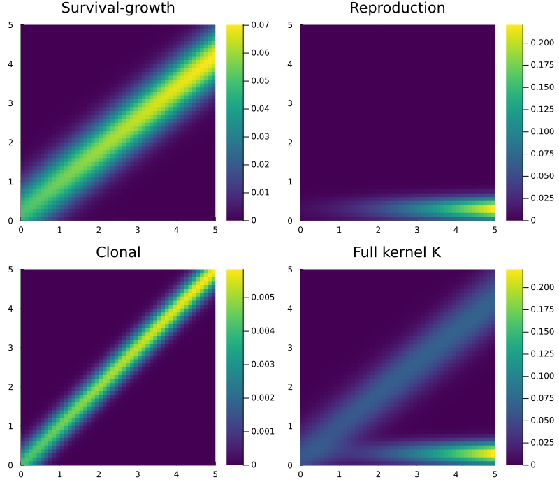
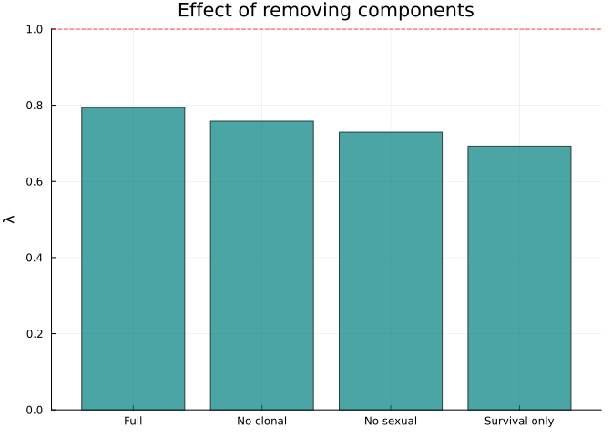

Compositional Model Construction
Simon Frost
Overview
Real structured population models are built from components — survival, growth, reproduction, dormancy — that share state variables. CategoricalPopulationDynamics.jl provides three levels of compositional construction:
compose_transitions— Catlab-free additive sum of sub-matricesoapplywith ProjectionSharers — undirected wiring diagram compositioncompose_from_uwd— UWD composition with kernel functions
This vignette demonstrates all three approaches, shows their equivalence, and builds progressively more complex models.
Setup
using CategoricalPopulationDynamics
using Catlab
using Catlab.CategoricalAlgebra
using Catlab.WiringDiagrams
using Catlab.Programs: @relation
using LinearAlgebra
using StructuredPopulationCore: lambda
using PlotsVital Rate Functions
We define a set of vital rate functions for a perennial plant, designed so that each demographic process is a separate, reusable component.
# --- Survival ---
s(z) = 1.0 / (1.0 + exp(-(0.5 + 0.3 * z)))
# --- Growth (Gaussian transition) ---
g(z_new, z) = exp(-0.5 * ((z_new - (0.2 + 0.8 * z)) / 0.5)^2) / (0.5 * sqrt(2π))
# --- Fecundity ---
f_rate(z) = exp(0.1 + 0.2 * z)
recruit_dist(z_new) = exp(-0.5 * ((z_new - 0.5) / 0.3)^2) / (0.3 * sqrt(2π))
# --- Sub-kernels ---
P_kernel(z_new, z) = s(z) * g(z_new, z)
F_kernel(z_new, z) = f_rate(z) * recruit_dist(z_new)
# --- Domain ---
domain = ContinuousProjectionDomain(0.0, 5.0, 50)ContinuousProjectionDomain{Float64}(0.0, 5.0, 50)Level 1: Direct Composition
The simplest approach — discretise each sub-kernel independently, then sum:
A_P = left_kan_extension(P_kernel, domain)
A_F = left_kan_extension(F_kernel, domain)
# Catlab-free: just sum the matrices
A_direct = compose_transitions(Dict(:P => A_P, :F => A_F))
println("λ(direct composition) = ", round(lambda(A_direct), digits=6))λ(direct composition) = 1.79232This also works with a NamedTuple:
A_nt = compose_transitions((P=A_P, F=A_F))
println("λ(NamedTuple) = ", round(lambda(A_nt), digits=6))
println("Agree: ", A_nt ≈ A_direct)λ(NamedTuple) = 1.79232
Agree: trueLevel 2: ProjectionSharers and oapply
A ProjectionSharer wraps a transition matrix as an undirected open system. Ports represent shared state variables; composition sums contributions at shared junctions.
Constructing Sharers
# From a pre-computed matrix
ps_P = ProjectionSharer(A_P)
println("Survival sharer: ", ps_P.nstates, " states, ", ps_P.nports, " ports")
# Or directly from a kernel function + domain
ps_F = ProjectionSharer(F_kernel, domain)
println("Fecundity sharer: ", ps_F.nstates, " states, ", ps_F.nports, " ports")Survival sharer: 50 states, 50 ports
Fecundity sharer: 50 states, 50 portsComposing via UWD
An undirected wiring diagram (UWD) specifies how processes share state variables. The @relation macro from Catlab creates UWDs:
# Two processes sharing a common trait axis (z, z_new)
uwd = @relation (z, z_new) begin
survive_grow(z, z_new)
reproduce(z, z_new)
end
# Compose: additive sum at shared junctions
result = oapply(uwd, [ps_P, ps_F])
println("λ(oapply) = ", round(lambda(result.matrix), digits=6))
println("Agrees with direct: ", result.matrix ≈ A_direct)λ(oapply) = 1.79232
Agrees with direct: trueNamed Dictionary Composition
For models with many components, use a dictionary keyed by UWD box names:
sharers_dict = Dict(
:survive_grow => ProjectionSharer(A_P),
:reproduce => ProjectionSharer(A_F))
result_dict = oapply(uwd, sharers_dict)
println("λ(dict oapply) = ", round(lambda(result_dict.matrix), digits=6))λ(dict oapply) = 1.79232Level 3: UWD Composition with Kernels
compose_from_uwd combines UWD specification with kernel evaluation — it performs the left Kan extension for each box and sums:
sub_kernels = Dict(
:survive_grow => P_kernel,
:reproduce => F_kernel)
K = compose_from_uwd(uwd, sub_kernels, domain)
println("λ(compose_from_uwd) = ", round(lambda(K), digits=6))
println("Agrees with direct: ", K ≈ A_direct)λ(compose_from_uwd) = 1.79232
Agrees with direct: trueAll Three Methods Agree
λ_1 = lambda(compose_transitions(Dict(:P => A_P, :F => A_F)))
λ_2 = lambda(oapply(uwd, [ps_P, ps_F]).matrix)
λ_3 = lambda(compose_from_uwd(uwd, sub_kernels, domain))
println("compose_transitions: λ = ", round(λ_1, digits=8))
println("oapply (UWD): λ = ", round(λ_2, digits=8))
println("compose_from_uwd: λ = ", round(λ_3, digits=8))
println("All agree: ", λ_1 ≈ λ_2 ≈ λ_3)compose_transitions: λ = 1.79231987
oapply (UWD): λ = 1.79231987
compose_from_uwd: λ = 1.79231987
All agree: trueBuilding Complex Models: Decomposing Fecundity
In practice, fecundity itself may be decomposed into sub-processes — flowering probability, seed production, germination, and seedling establishment. We can model each as a separate component:
# Decompose fecundity into components
flower_prob(z) = 1.0 / (1.0 + exp(-(z - 2.0))) # size-dependent flowering
seed_count(z) = exp(1.0 + 0.3 * z) # seeds per flowering plant
germination = 0.1 # germination probability
seedling_dist(z_new) = exp(-0.5 * ((z_new - 0.3) / 0.2)^2) / (0.2 * sqrt(2π))
# Combined fecundity kernel
F_detailed(z_new, z) = flower_prob(z) * seed_count(z) * germination * seedling_dist(z_new)
# UWD with 3 boxes: survival-growth, flowering reproduction, and
# an optional clonal reproduction pathway
clonal_prob(z) = 0.05 * s(z) # small probability of clonal reproduction
clonal_dist(z_new, z) = exp(-0.5 * ((z_new - z) / 0.3)^2) / (0.3 * sqrt(2π))
C_kernel(z_new, z) = clonal_prob(z) * clonal_dist(z_new, z)
uwd_3 = @relation (z, z_new) begin
survive_grow(z, z_new)
reproduce(z, z_new)
clone(z, z_new)
end
kernels_3 = Dict(
:survive_grow => P_kernel,
:reproduce => F_detailed,
:clone => C_kernel)
K_3 = compose_from_uwd(uwd_3, kernels_3, domain)
println("λ (3-component model) = ", round(lambda(K_3), digits=4))λ (3-component model) = 0.794z = meshpoints(domain)
A_sg = left_kan_extension(P_kernel, domain)
A_fd = left_kan_extension(F_detailed, domain)
A_cl = left_kan_extension(C_kernel, domain)
p1 = heatmap(z, z, A_sg, title="Survival-growth", color=:viridis, clims=(0, maximum(A_sg)))
p2 = heatmap(z, z, A_fd, title="Reproduction", color=:viridis, clims=(0, maximum(A_fd)))
p3 = heatmap(z, z, A_cl, title="Clonal", color=:viridis, clims=(0, maximum(A_cl)))
p4 = heatmap(z, z, K_3, title="Full kernel K", color=:viridis, clims=(0, maximum(K_3)))
plot(p1, p2, p3, p4, layout=(2, 2), size=(800, 700))
Sensitivity to Component Removal
The compositional framework makes it easy to ask: what happens if we remove a component?
# Full model
λ_full = lambda(K_3)
# Remove clonal reproduction
K_no_clone = compose_from_uwd(
(@relation (z, z_new) begin
survive_grow(z, z_new)
reproduce(z, z_new)
end),
Dict(:survive_grow => P_kernel, :reproduce => F_detailed),
domain)
λ_no_clone = lambda(K_no_clone)
# Remove sexual reproduction (only survival + clonal)
K_no_sex = compose_from_uwd(
(@relation (z, z_new) begin
survive_grow(z, z_new)
clone(z, z_new)
end),
Dict(:survive_grow => P_kernel, :clone => C_kernel),
domain)
λ_no_sex = lambda(K_no_sex)
# Survival only
λ_surv = lambda(left_kan_extension(P_kernel, domain))
labels = ["Full", "No clonal", "No sexual", "Survival only"]
lambdas = [λ_full, λ_no_clone, λ_no_sex, λ_surv]
bar(labels, lambdas,
ylabel="λ", title="Effect of removing components",
legend=false, color=[:teal :steelblue :goldenrod :indianred], alpha=0.7)
hline!([1.0], linestyle=:dash, color=:red, label="λ = 1")
Sexual reproduction drives population growth; clonal reproduction provides a small additional contribution.
Projection Net Structure
For documentation and model validation, we can inspect the projection net:
net_3 = LabelledProjectionNet([:size],
:survive_grow => (:size => :size),
:reproduce => (:size => :size),
:clone => (:size => :size))
println("Model structure:")
println(" States: ", sname(net_3))
println(" Transitions: ", tname(net_3))
println()
for t in 1:n_transitions(net_3)
src_names = [sname(net_3, s) for s in sources(net_3, t)]
tgt_names = [sname(net_3, s) for s in targets(net_3, t)]
println(" ", tname(net_3, t), ": ", src_names, " → ", tgt_names)
endModel structure:
States: [:size]
Transitions: [:survive_grow, :reproduce, :clone]
survive_grow: [:size] → [:size]
reproduce: [:size] → [:size]
clone: [:size] → [:size]Summary
In this vignette we demonstrated three levels of compositional model construction:
compose_transitions— simple additive sum, no Catlab dependencyoapplywith ProjectionSharers — formal UWD composition via Catlabcompose_from_uwd— UWD composition directly from kernel functions
All three produce identical results. The UWD-based approaches provide:
- Formal specification of the composition pattern
- Named dictionary lookup for components
- Easy addition/removal of components for sensitivity analysis
The next vignette covers spatial extension (stratification) and resolution change (coarsening).